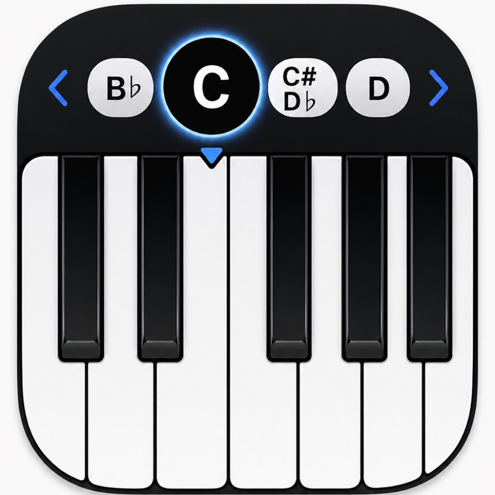
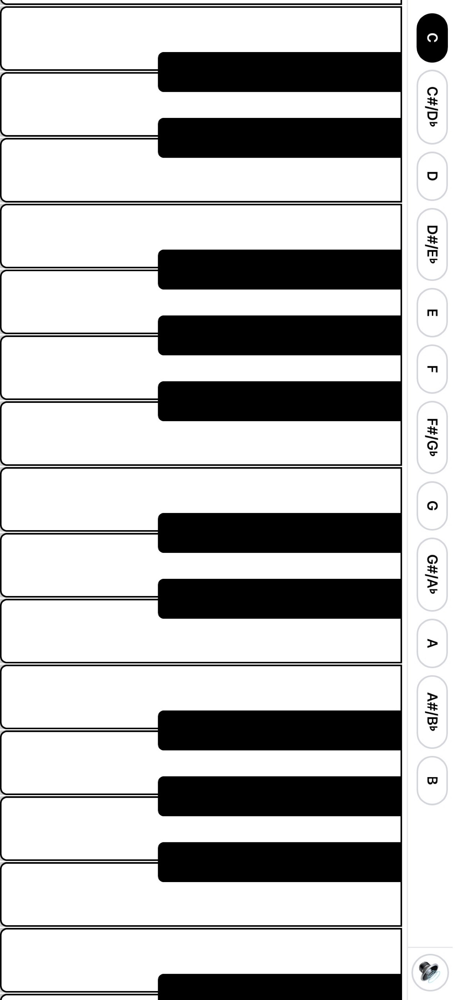

Play in any key
Switch between all 12 keys and focus on the tones that belong to the selected scale.

Transpose PianoAn interactive piano for practicing in any key. Choose a key, play the visible scale tones, and hear notes clearly even when your iPhone is in silent mode.

Switch between all 12 keys and focus on the tones that belong to the selected scale.
A clean keyboard layout works on iPhone and iPad for quick practice sessions.
The piano runs on your device, so practice does not depend on a server connection.
Monthly Premium includes a 7-day free trial for eligible new subscribers, then renews monthly unless canceled at least 24 hours before the end of the current period.
You can manage or cancel your subscription in iPhone Settings > Apple Account > Subscriptions. Purchases are handled securely by Apple through the App Store.
Email p13761495164@gmail.com for support, subscription questions, or feedback. For legal terms, see Apple's Standard EULA.